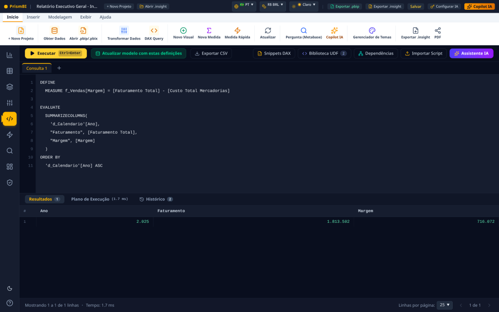

Open-source Power BI alternative for Linux & Windows
VetroBI is a free, native desktop BI app. It opens your Power BI
.pbip / .pbix projects and runs them on a
Rust DAX engine with embedded DuckDB — no Windows VM, no cloud tenant.
Free and open source. AppImage / .deb / .rpm / AUR for Linux, MSI / portable ZIP for Windows x64.
See it in action
Real screenshots from the app — report canvas, semantic model view, and the DAX query console.



Features
Taken straight from the project README — nothing here is unverified.
Opens .pbip and .pbix
Native Rust import of .pbip folders (TMDL semantic model + PBIR report) and .pbix files, including DataModelSchema and the Power Query (M) mashup.
Native Rust DAX engine
A typed Rust engine with 165+ DAX functions, measured at 364/368 (98.9%) conformance on an independently verified corpus checked on every CI build.
Embedded DuckDB
Fast native ingestion of Excel, CSV, Parquet, JSON and REST API sources, plus PostgreSQL, MySQL/MariaDB, SQLite and partitioned Parquet connectors — no external gateway.
Visual Power Query editor
A Power BI-style Queries pane with ~80 operations, editable applied steps, a formula bar and an Advanced Editor. M is genuinely parsed and generated, round-tripping on .pbip import/export.
Interactive visuals
Cards/KPIs, column/bar/line/area/combo/treemap/scatter/gauge charts (Apache ECharts), pie/donut, Power BI-style funnel & waterfall, matrices, tables and slicers.
Signed auto-updates
The in-app updater only installs packages whose SHA256SUMS.txt carries a valid Ed25519 signature, with download URLs restricted to this repository's releases.
Download
Pre-built packages for Linux and Windows x64. All assets are published together with a signed SHA256SUMS.txt.
Install from the AUR with your favorite helper:
yay -S vetrobi-bin
# or
paru -S vetrobi-binFrequently asked questions
Does VetroBI open .pbix files?
Yes. VetroBI natively reads .pbix files (the DataModelSchema, UTF-16LE Report/Layout, and multi-query DataMashup) as well as .pbip folders (TMDL semantic model + PBIR report), with round-trip export preserving Power Query (M) scripts and most visual/theme settings. See the Compatibility Matrix for exact coverage.
Is VetroBI affiliated with Microsoft or Power BI?
No. VetroBI is an independent, community project and is not affiliated with, endorsed by, or sponsored by Microsoft Corporation. Power BI is a trademark of Microsoft Corporation, used here only to describe file-format compatibility.
Does it work offline, without a Microsoft account or tenant?
Yes. VetroBI is a native desktop app (Tauri v2 + Rust + DuckDB). It reads local files and connects directly to databases you configure — it does not require a Microsoft 365 tenant, an online workspace, or an internet connection to open and analyze a model.
Is VetroBI free?
Yes. VetroBI is free and open source, distributed under The Mutualist License v1.3. The source code is public on GitHub.
What platforms are supported?
Linux (AppImage, .deb, .rpm, and an AUR package for Arch) and Windows x64 (MSI installer or a portable ZIP), as of v0.9.1.
VetroBI is an independent project, not affiliated with or endorsed by Microsoft. Power BI is a trademark of Microsoft Corporation. "VetroBI" and its logo are used here to identify this open-source project only.